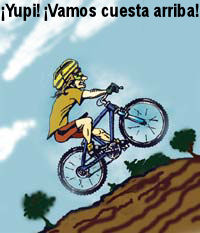

Agua realmente rápida

Recordarán el disparate promocionado por los farsantes del “Agua penta” sobre los “grupos” mejorados de moléculas de agua (vean http://www.randi.org/jr/08-24-01.html y http://www.randi.org/jr/08-31-01.html) y por supuesto sabemos que los homeópatas se desgañitan sobre la “memoria del agua”, como si la presencia de una sustancia que alguna vez se disolvió en el agua fuera retenida cuando las diluciones llegan a los milmillonésimos de concentración. Ahora, la Universidad de Toronto ha mostrado que la “memoria” de cualquier estructura singular en las moléculas de agua no durará más de 50 femtosegundos. Esto es cuncuenta milésimos de un millonésimo de un millonésimo de segundo, la décima parte de lo que antes pensaron los científicos. Esto significa dos cosas en el campo de la pseudomedicina: si usa agua Penta, tienen que abrir la botella muy rápido y tragársela o el efecto seguramente se desvanecerá, y en relación con los preparados homeopáticos sería mejor si se pararan al lado de la línea de ensamblaje de Boiron Pharmaceuticals para recibir las píldoras mágicas cuando salen de la rampa, o probablemente perderán el efecto terapéutico de esta noción, ¡porque la “memoria” sólo dura 1/20.000.000.000.000 de segundo!

¿Qué tan tonto puede ponerse esto?
La lectora Elizabeth Kowols nos cuenta de otro disparate homeopático que encontró en el catálogo de The Vermont Country Store, promocionando un producto fabricado por Washington Homeopathic Products Inc., en Bethesda, Maryland. Esta es una medicación que se dice que alivia la picazón y el salpullido de la hiedra venenosa. Elizabeth pregunta, con bastante sensatez:

Más allá del pensamiento de que los “medicamentos” homeopáticos son un montón de disparates, ¿cómo puede ayudar la ingestión de un par de pildoritas (oh, ¡la parte de arriba de la etiqueta dice claramente que son “píldoras de sucrosa/lactosa”!) a sanar un problema de la piel. ¿No sería mejor, digamos, usar una crema o pomada tópica?
The Vermont Country Store tiene algunos artículos encantadores en sus catálogos, pero creo que con éste realmente desbarraron. Y sólo porque afirman que las píldoras estén “registradas con la FDA” no significa que la FDA las haya aprobado, a menos que “registrado” y “aprobado” signifique lo mismo en el lenguaje de las drogas.
Este es otro ejemplo de igualar descubrimientos médicos genuinos y probados con afirmaciones pseudomédicas, como vemos en los avisos y afirmaciones para estas píldoras maravillosas:
… la próxima vez que lo ataque la hiedra venenosa o el roble venenoso use este remedio homeopático para detener la picazón y la extensión de la urticaria. Estas pildoritas funcionan con el mismo principio que las vaculas que todos conocemos estimulando el proceso natural del cuerpo, haciendo que la urticaria y la picazón desaparezcan mucho más rápido.
Esta es una falsa relación entre la homeopatía y la vacunación; simplemente no existe tal paralelo. Por supuesto, ya que no sabemos qué tan rápido se irían la urticaria y la picazón sin el uso de esas píldoras mágicas, no tenemos forma de evaluar la afirmación en este sentido. Veo que los catálogos listan dos artículos juntos, ¡quizá porque el primero nunca funciona y el otro funciona todas las veces y nunca necesita volver a llenarse! Hago notar que la misma compañía vende otras pastillas para obtener “Alivio para los dolores de cabeza congestivos, narices con romadizo o congestión, y tos aguda”… Afirman que las píldoras contienen una
… combinación homeopática de antimonio, bicromato de kali, metal de mercurial, y espongia.

Caray, como me preguntaba qué serían esos poderosos químicos, me remití a mi compendio “Materia Médica Condensada”, de 968 páginas y 1 kg de peso de disparates homeopáticos (¡me preguntó cuánto pesará la edición sin condensar!) y descubrí que estas misteriosas sustancias son, respectivamente, sulfuro de antimonio, dicromato de potasio, mercurio y una esponja común “asada”. Este último ingrediente se usa, de acuerdo con la “Materia Médica”, para tratar una lista de síntomas que llena 5 páginas, incluyendo:
El impulso irresistible de cantar, con júbilo excesivoTemor del futuro; cansancio de vivirSensación de que el cabello se para de puntaLos dientes se sienten débiles y sueltos al masticarRuidos sordos en el estómago, es peor por las tardes y las mañanas
Aunque he tenido un par de estos síntomas (¡no, el tercero no!), maldito si voy a masticar “esponja asada”. Los otros ingredientes listados son venenos mortales, pero tengan en cuenta que en realidad no están allí; sólo permanecen las “vibraciones”, como en todos los preparados homeopáticos. Sin embargo, en el Volumen 2 (709 páginas, unos 800 gramos) del libro del propio Samuel Hahnemann, nos dice que
Se dice que algunos casos de envenenamiento por mercurio, especialmente el temblor de los plateadores, se alivian con electricidad.
(El término “plateadores” se refiere a los que trabajan plateando metales, un proceso que en algún momento utilizó compuestos mercúricos muy venenosos, que inducían problemas del sistema nervioso. El “Mal de los Sombrereros Locos” (el eritismo) era similar, ya que se usaba nitrato mercúrico para incluir piel en el fieltro de los sombreros; el Sombrerero Loco de “Alicia en el País de las Maravillas” (1865) habría sido víctima de daños cerebrales y renales producidos por el veneno.)
Cuánta electricidad, y de qué variedad, haría falta para tratar a esos infortunados, no se nos dice. A Hahnemann le gustaban esos comentarios y sugerencias vagas intercaladas aquí y allá. Un curandero clásico, en todos los aspectos.
Epifanías
El lector Jim C. comenta sobre mi discusión reciente sobre la percepción sensorial humana errónea, y nos muestra cómo resolvió él mismo algunos misterios:
Estaba leyendo el archivo de comentarios y quise compartir algunas experiencias que hubieran puesto a personas menos firmes en un frenesí de creencia en lo sobrenatural.

Estaba yo en una fiesta universitaria (sí, había alcohol) y observé a través de la ventana del tercer piso una gran estructura brillante lejos en el cielo flotando hacia mí. Me repetí una y otra vez “Seguro que no es nada místico ni extraterrestre” mientras me preguntaba al mismo tiempo si debía avisarles a todos, quizá corriendo por todas partes al grito de “el cielo se está cayendo…”. Allí definitivament ehabía algo, y quién sabe, si apareciera ET tendría que hacerlo en algún lugar y en algún momento, por qué no aquí y ahora. Por suerte mi inquietud sólo duró unos cinco minutos hasta que pude darme cuenta de que era un dirigible no rígido de Goodyear que pasaba sobre nosotros. No sabía que tenían rejillas de luces a los costados de la bolsa de gas para proyectar avisos publicitarios por la noche.
Mientras bajaba de una ascención de una gran montaña en un espantoso clima de llovizna, vi justo en el medio de la ruta a través del bosque que tenía delante una gran esfera brillante de unos dos metros de diámetro flotando a medio metro del suelo. De nuevo, pensé que no sería nada sobrenatural, pero ¿podía ignorar misp ropios ojos? Mientras seguía estoicamente por el camino intentando estar atento pero no entrar en pánico, el objeto se reveló como una piedra coloreada por la luz de unos 90 centímetros de diámetro ubicada en el camino. Lo interesante es que la otra persona con la que yo estaba tuvo una percepción idéntica y vaciló en decir algo al igual que yo hasta después de que se resolvió la percepción. Supongo que un creyente verdadero (de cualquier cosa y de todo) hubiera afirmado que realmente había una esfera flotante y que o se transmutó cuando nos acercamos, o nos disparó uno de esos rayos de control mental.
Esta fue interesante. Estaba conduciendo hacia casa solo en la oscuridad en una ruta en medio del campo y vi la luna llena claramente sobre mi cabeza, salvo que es de color claramente morado. De nuevo, me pregunté “¿qué es esto?” y de nuevo fui escéptico sobre lo que realmente pasaba. Seguí mirando y mirando y deseando que alguien estuviera conmigo y que también lo viera. Mi cerebro de pensamiento racional está activo: ¿qué pasa que hay una luna totalmente morada? ¿Puede ser por algún arma de rayos extraterrestre? De a poco la luna empieza a volver a su color normal, primero de forma intermitente, en su parte de abajo. Lástima, esto y mi persistencia me llevaron a una solución: había estado viendo esta brillante luna llena a través de la franja coloreada superior del parabrisas de mi auto. Cuando el auto se movió y yo me moví dentro del auto para confirmar mis observaciones, empecé a ver parte de la luna debajo de la franja coloreada y lo descubrí todo.
Y finalmente, algo que me pasa todo el tiempo. Corro y ando en bicicleta largas distancias con frecuenia y por lo general atravieso a gran velocidad lugares que parecen estar ligeramente en ascenso. Uno de ellos, de hecho, está en un camino sobre una amplia calzada de tierra que atraviesa un lago. Así que, a menos que haya algún extraño efecto gravitacional en juego (quizá un “Lugar Misterioso”), si la distancia del camino sobre el agua del lago es constante, el camino debe estar horizontal. Al acercarse se ve claramente como si el camino estuviera ascendiendo. Quizá esto tenga algo que ver con que el cerebro asume que algo que se pierde en la distancia dee estar ascendiendo hacia el nivel del ojo. Este error de percepción también funciona haciendo que seciones ligeramente en bajada parezcan estar horizontales. Cambiar mi dirección habitual de carrera o el circuito de ciclismo ayuda a revelar estos puntos mal percibidos, haciéndome ver que lo que estaba queriendo adjudicar a un gran desempeño era que en realidad yo estaba yendo horizontal cuando creía subir, o yendo horizontal cuando en verdad estaba yendo cuesta abajo.
Jim, esta última ilusión sensorial depende de dos factores: primero, su habilidad algo reducida de usar el sistema perceptivo del oído interno para orientarse cuando está en movimiento, y (más importante) su tendencia de aceptar las indicaciones aprendidas de “horizontalidad” como que los árboles crecen perpendiculares a la superficie. Si, quizá debido au na dislocación de la superficie local del terreno, los árboles se inclinan en relación a su orientación original, uno puede aceptar esa pista y percibir erróneamente la orientación. Qué es horizontal (o cuesta arriba o abajo) se vuelve más difícil de decidir. Su comentario sobre un “Lugar Misterioso” está bien aplicada aquí; esta es la explicación para muchas de tales ilusiones.
En cualquier caso, el comentario refuerza mi observación acerca de lo frecuentemente que nuestros sentidos nos informan mal, pero Jim nos ha dado ejemplos de cómo un poco de pensamiento y observación pueden “enderezarnos” (¡chiste!) otra vez.
Ya que hablamos de errores de percepción sensorial, les diré que finalmente encontré un haiku que recordaba vagamente que se refería a e este tema. Es de Soseki (1867-1916) y muestra que él aceptaba considerar que su percepción inmediata podría estar equivocada. Está en esta ilustración:

“Las piedras de colores claros vibran en el lecho del arroyo… o es el agua la que vibra”
Una buena carcajada

La lectora Peggy Catlin-Nesmith nos envía a www.earthbounddog.com para soltar una buena carcajada. Como le respondí: “¡Divertidísimo! Pero uno nunca puede tener demasiado cuidado…”
Corrección política… de nuevo
Recibí varios comentarios sobre mi crítica de que Starbucks siguió fielmente el consejo de sus abogados declarando que no creían ni aceptaban una cita potencialmente (¡inevitablemente) controvertida. Vean http://www.sindioses.org/randi/randi20050311.html#caf-aguado-de-starbucks. He aquí más evidencia de cuán asustadas están las empresas comerciales (hasta las que se dedican a la ciencia y a la educación) de los fanáticos religiosos:
Imax es el sistema de proyección supergrande con imágenes de hasta veinte metros de alto y sonido digital envolvente. Varios cines Imax de los Estados Unidos, incluyendo algunos en museos de ciencia, se están negando a exhibir películas que mencionen la evolución, o la teoría del Big Bang, o la geología de la Tierra, por temor a las protestas de la gente que objeta las películas que contienen hechos científicos que contradicen la mitología bíblica sobre el origen de la Tierra y la vida. Estos cines se encuentran en su mayoría en el sur de los Estados Unidos.
Una de esas películas temidas es “Volcanes del mar profundo”, estrenada en 2003 y auspiciada en parte por la Fundación Nacional de la Ciencia. Revela las extrañas criaturas que prosperan en el entorno caliente, fuertemente ácido y sulfuroso en los respiraderos del fondo oceánico, bajo condiciones químicas y ambientales increíbles tales como toneladas de presión por centímetro cuadrado. Dado que esas variedades de vida no se mencionan en la Biblia, y ciertamente no pudieron haber sido llevadas a bordo del Arca, los fundamentalistas deben negar que existen, e ignorar cualquier evidencia presentada. El doctor Richard Lutz, el oceanógrafo de Rutgers que fue el científico en jefe de la película, dice que “Volcanes” ha sido rechazada en cerca de una docena de centros científicos debido a sus breves referencias a la evolución. James Cameron, uno de los productores del film, dijo que otro documental Imax en el que trabajó halló oposición durante la posproducción, cuando algunos cines pidieron que cambiara una línea de diálogo referida a la adoración del Sol por parte de los antiguos egipcios. Sin embargo, la línea permaneció. Cameron dijo que estaba “sorprendido y algo ofendido” de que la gente fuera sensible a las referencias a la evolución en “Volcanes”. Dijo que era “obviamente sintomático de nuestro alejamiento del empirismo en la ciencia en dirección a la ciencia basada en la fe”.
La controversia religiosa también ha afectado de forma negativa la distribución de “Viaje Cósmico”, una película Imax que muestra la escala del universo empezando desde la escala de las partículas subatómicas hasta la de los cúmulos de galaxias, un hecho que ofende a los fieles. Otra producción Imax, “Galápagos”, trata de la isla donde Darwin descubrió su teoría de la evolución, y naturalmente también ha sido prohibido en algunos cines Imax.
El director de mercadeo del Museo Fort Worth de Ciencia e Historia dice sobre este tipo de películas: “Si no va a atraer a una multitud y va a crear controversia, desde un punto de vista de mercado no puedo recomendarla” para su exhibición. El doctor Hyman Field, que se retiró el año pasado de la Fundación Nacional de Ciencias, dice que censurar películas como “Volcanes” no es una opción. Dijo que el productor de la película se puso en contacto con él cuando surgió el tema de la evolución para preguntarle si habría que alterar la película. “Le dije que definitivamente no”, dijo el doctor Field.
Vemos aquí el abandono de la ciencia y la educación por parte de los centros que se establecieron para alentar esos factores, en reacción a las amenazas de boicot y a las manifestaciones. Es, como dijo James Cameron, un “alejamiento del empirismo en la ciencia en dirección a la ciencia basada en la fe”.
Pero en noviembre del 2008…
Alentando (?) las noticias
Nos enteramos de que Sonia Lorraine Adams, una mujer de 26 años de Longmont, Colorado que se hace llamar “Psychic Victoria” (“Victoria Psíquica”) convenció a personas, con frecuencia ancianas, a que le dieran grandes cantidades de dinero para obtener consejo “psíquico”, “cristales sanadores” y otros milagros diversos. Estafó a ocho personas por valor de US$ 111.000 en efectivo y joyas antes de que la detuvieran. Adams fue arrestada en julio pasado luego de que una anciana informó que le había sustraído US$ 50.000, prometiendo usar el dinero para ir a Canadá a obtener ciertos “cristales” para sanar a su hijo enfermo. Cuando Adams luego le pidió a la mujer US$ 75.000 más, llamó a la policía.
Adams, al principio, fue condenada a diez días en la cárcel. También se le dijo que tenía que devolver más de US$ 70.000, o 75% del valor monetario que robó. Sin embargo, luego el juez decidió en contra del período en prisión, y le dio a Adams sólo libertad condicional y la orden de pagar los US$ 70.000. Se le ordenó no tener contacto con sus víctimas y no dedicarse a actividades similares nuevamente; si violara los términos de su libertad condicional, podría ir a prisión por un plazo entre cuatro y doce años. Una de las víctimas de Adams, al conocer esta injuriosa decision del juez, dijo: “Todos hemos sido víctimas dos veces, una a manos de ella y otra a manos de la Oficina del Fiscal de Distrito por la penalidad leve propuesta. Está diciendo a las claras que el crimen da beneficios en el Condado de Boulder”.
Estén seguros de ello, hay otros artistas de la estafa que trabajan en el Condado de Boulder, y esta decisión del juez les dará valor. Qué gran situación: uno esquilma a sus víctimas una y otra vez, luego si lo agarran, uno devuelve el 75% de lo que roba, y se muda de ciudad, usa un seudónimo diferente, ¡y vuelve a empezar!
Preguntas frecuentes
Ocupado como estoy para prepararme para un par de conferencias, decidí terminar esta página semanal con una reelaboración y actualización de algunas preguntas frecuentes que presenté aquí hace unos años. Pueden ir a http://www.randi.org/research/faq.html para obtener un documento de este tipo muy abarcativo [en inglés], pero estas 12 preguntas son de naturaleza más general… Helas aquí.
Como puede esperarse, cuando me entrevistan los medios, con frecuencia me lanzan las mismas preguntas en relación a mi trabajo y el manejo de los aspirantes al premio del millón de dólares de la JREF. Y los corresponsales por e-mail hacen muchas preguntas similares. He aquí una docena de las favoritas, junto con mis breves respuestas.
(1) ¿Cuál fue el caso más difícil que tuvo que develar?
Ninguno fue especialmente difícil. Lo más difícil siempre ha sido que el o la aspirante afirme claramente qué es lo que piensa que puede hacer, bajo qué condiciones, y con qué exactitud. La mayoría son demasiado vagos sobre estos aspectos, y muy pocos tienen noción alguna de cómo se debe ejecutar una prueba correcta. A veces en la JREF lleva meses acordar estos detalles, sólo para que el aspirante de pronto se vaya de las negociaciones. Pero resolver en verdad qué ocurre, o por qué los aspirantes creen que tienen poderes (si se llega a ese punto en la negociación) es fácil, porque la variedad de afirmaciones es bastante pequeña y nunca se presenta nada de verdad nuevo. Las afirmaciones a veces son variaciones interesantes de antiguos errores de concepto o autoengaños, pero es raro que haya algo que nos sorprenda o que requiera un análisis muy estricto. Por supuesto, hay algunas situaciones donde el aspirante no ha dado suficiente información, aunque intentamos obtgener todos los datos necesarios, así que en esos casos no podemos siquiera determinar cuál puede ser la afirmación.
(2) ¿Ha habido alguna vez en la que pensó “Éste se va a llevar el premio”?
No. Ojalá hubiera alguna oferta o afirmación realmente desafiante, sólo para hacer mi trabajo más interesante, pero es prácticamente siempre el mismo viejo material, repetido interminablemente. Y nunca, jamás me sorprendió demasiado una afirmación, aunque con frecuencia me sorprende el hecho de que a alguien realmente lo engañe una cosa así, siquiera por un momento.
(3) A la fecha, ¿cuántas personas han sido sometidas a prueba por el millón de dólares ofrecido por la JREF?
Esa no es una pregunta fácil de responder. Muchos cientos se han presentado, y a la mayoría ha tenido que decírsele que volviera a presentarse (a veces en varias ocasiones) porque lo hicieron mal o de forma incompleta. En cualquier momento dado, se están considerando entre 40 y 60 aspirantes, pero la experiencia nos dice que la amplia mayoría se retirará incluso antes de pueda diseñarse cualquier prueba preliminar correcta. De los que llegan a la etapa preliminar, quizá a un tercio se lo pondrá a prueba, y algunos de ellos abandonarán antes de terminar. Hasta la fecha, nadie ha pasado realmente las pruebas preliminares sencillas y llegado a la etapa de prueba formal, aunque un par de cientos han completado y fallado las preliminares. Así que no se ha puesto a prueba formalmente a nadie para el gran premio, aunque estamos listos y dispuestos.
(4) ¿Por qué parece que usted sólo pone a prueba a personas con afirmaciones muy menores e incluso insignificantes, y no a los destacados “psíquicos” y/o científicos que aparecen en televisión y en los medios, y que escriben libros sobre sus carreras?
Sólo podemos poner a prueba a personas que, o bien se presentan para ser aspirantes al premio del millón de dólares, o que voluntariamente se someterán a seguir procedimientos de prueba correctos. Las “estrellas” nunca hacen eso, y de hecho hacen todo lo que pueden para evitarnos a nosotros y a nuestro desafío; prefieren hablar incansablemente sobre glorias pasadas, señalar evidencia anecdótica, o ignorar a lo grande nuestra oferta auténtica para ponerlos a prueba. La gente que sí se presenta probablemente están convencidas honestamente de sus habilidades, y no temen lo que pueda descubrirse. ¿Dónde están James Van Praagh, Sylvia Browne, George Anderson, John Edward, y el resto de los “grandes nombres” actuales? ¿Y por qué Uri Geller, el doblacucharas profesional (¿lo recuerdan de los ‘70?) no se ha hecho con este dinero fácil? Uno sólo puede preguntarse la razón.
(5) ¿Qué daño hace dejar simplemente que la gente crea en tonterías? ¿Por qué quitarles sus autoengaños placenteros?
El daño potencial es muy real, y peligroso. Creer en disparates tan obvios como la astrología o la adivinación puede parecer (de modo bastante incorrecto) dar resultados confirmatorios, y eso puede hacer que la víctima se acerque a fraudes más peligrosos, más caros, y con frecuencia referidos a la salud. La creencia ciega puede ser reconfortante, pero fácilmente puede deteriorar la razón y la productividad y detener el progreso intelectual. En la JREF nunca intentamos imponer nuestras creencias o filosofías a otros; sólo tratamos de informarlos, y sugerimos que hay elecciones alternativas por hacer. Son numerosos los ejemplos de tragedias personales como resultado de la aceptación acrítica de las afirmaciones sobrenaturales.
(6) ¿Por qué sigue recomendando el pensamiento crítico sobre lo paranormal, la superstición y la pseudomedicina, si nisiquiera se puede convencer a la gente de que está equivocada?
Nos parece que hay que hacer un esfuerzo, en especial para hacer que la gente joven piense crítica y valientemente sobre estos temas. Los que no se han rendido por completo a la aceptación despreocupada de los fraudes, pueden ser impulsados a pensar sobre sus decisiones, y en muchos casos pueden cambiar de idea y lo harán. Otros, nos damos cuenta, conservarán sus autoengaños porque han invertido demasiado en ellos. No hacer al menos el esfuerzo de informarles lo que sabemos que es cierto, sería falto de ética.
(7) ¿Alguna vez ganarán la batalla de la racionalidad contra la superstición?
Creemos que esa “guerra” nunca la ganaremos, porque a los artistas de la estafa y los promotores del disparate que se engañan honestamente los reemplazan otros todo el tiempo. Y aunque Barnum nunca lo dijo, parece que “nace un tonto cada minuto”. Así que tenemos depredadores y presa, y esa es una condición natural y esperada de la vida; siempre ha sido así. La JREF sólo espera enseñar a aquellos que (no por su propia culpa) no conocen ciertos hechos del mundo real, para que sean presa más difícil de atrapar para los depredadores. Pero hay una diferencia entre ganar una “guerra” y ganar una “batalla”. Ganamos batallas cada día, cuando alguien nos visita y anuncia que le hemos ayudado de alguna manera a entender mejor el mundo. Cada clase llena de niños ante la que hablamos, cada audiencia en cualquier lugar del mundo, nos hace ganar una gatalla. Por eso seguimos en ello.

(8) Pero usted no es un científico. ¿Cómo puede hablar de estos temas con autoridad?
La autoridad no reside en los científicos, en los temas que se refieren a la emoción, la necesidad y la desesperación. Los científicos también son seres humanos; pueden ser engañados, y pueden engañarse a sí mismos. En la JREF estamos capacitados en dos aspectos: sabemos se engaña a la gente, y sabemos cómo la gente se engaña a sí misma. Nos ocupamos de hechos concretos y básicos, y hacemos lo mejor posible para darlos a conocer. Tratamos de proteger a la gente de las influencias que podrían opacar el verdadero peligro del pensamiento acrítico. Con frecuencia tenemos éxito. Y tenemos a mano autoridades científicas muy sólidas y eminentes para proporcionar el asesoramiento y la especialización que necesitamos.
(9) Se han escrito informes científicos que dan soporte a eventos y talentos paranormales. Siendo ése el caso, ¿cómo puede negarlos?
Los científicos pueden equivocarse; a veces, muy seriamente. La historia de la ciencia está llena de serios errores de juicio, mala investigación, resultados falsificados y simples errores, cometidos por los científicos de todas las disciplinas. Lo bello de la ciencia es que se corrige a sí misma por su propia naturaleza y diseño. Por estos medios, la ciencia nos proporciona puntos de vista progresivamente más claros de cómo funciona el mundo. Desafortunadamente, aunque la ciencia misma se corrige a sí misma, a veces los científicos participantes no se corrigen a sí mismos. Y no hay un solo ejemplo de un descubrimiento científico en el campo de la parapsicología que haya sido reproducido de forma independiente. Eso hace que la parapsicología sea absolutamente singular en el mundo de la ciencia.
(10) ¿En qué proyectos está trabajando en este momento?
En algunos casos, no podemos decirlo. Lo siento. Siempre hay investigaciones en curso, pero por su naturaleza, no podemos discutir abiertamente estos temas. Pero se están desarrollando y escribiendo especiales de TV, hay libros casi terminados, y se están contratando conferencias en todo el mundo. Intentamos mantener a la gente informada por medio de nuestra página web, que actualmente recibe en promedio 100.000 visitas por día.
(11) Si lo que usted dice es cierto, y los poderes sobrenaturales que se mencionan a diario en los medios no están probados, ¿por qué los propios científicos no hablan contra estas afirmaciones?
Es realmente una lástima que más científicos preocupados no se molesten en hacer declaraciones cuando ven que sus colegas se pasan de la raya en algunos temas. Carl Sagan, Richard Feynman, Isaac Asimov, B.F. Skinner y un abanico de luminarias científicas que se atreviaron a hacerse notar y a que sus opiniones se oyeran claramente en los medios, ya no están con nosotros, y ahora tenemos a Michael Shermer, la CSICOP, la JREF y otras personas y agencias intentando llenar esos zapatos. Necesitamos que más voces claras de la razón se oigan con más frecuencia. Es infortunado que en su mayoría los científicos tiendan a preferir la vida en “torres de marfil” y no decidan involucrarse en controversias públicas. Llamamos a las puertas de esas torres con frecuencia…
(12) ¿Otros países además de los EE.UU. también están plagados de creencias y afirmaciones increíbles de pseudomedicina, pseudociencia y magia?
Oh, sí. Es difícil determinar o definir un “factor de tontería” para cualquier cultura, pero podemos decir que todas las partes de la Tierra se están sumergiando más y más en disparates de ese estilo. Aunque las “variedades”, idiomas y vestiduras de las creencias puedan variar, todas están en plena expansión. En un lugar, nociones médicas medievales pueden estar en plena vigencia, mientras que en otro lugar la población está fascinada, por el momento, con la invocación de los espíritus. Y no está mejorando. Más bien al contrario.
Hace unos pocos años en Padua, Italia, asistí a la convención anual del CICAP (el Comitato Italiano per il Controllo delle Aftermazioni sul Paranormale [Comité Italiano para el Control de las Afirmaciones sobre lo Paranormal]). Como para ese entonces ya tenía algo de visibilidad en la prensa local, me sometieron a algunas preguntas y acusaciones furiosas. Una mujer de severa mirada se me acercó festoneada de abalorios y cristales, el pelo torcido y decidida a abofetearme con La Gran Pregunta. Por medio de un intérprete, me exigió que le diera “la fórmula química del alma”. Me parece que esta persona, junto con muchas otras, realmente piensa que esa pregunta me noquearía instantáneamente. Hizo su pregunta, y luego sonrió triunfante, esperando mi confusión… que no se produjo. La miré directamente a los ojos y le dije que lo que preguntaba no tenía sentido, y que no entendía la naturaleza del tema que intentaba tratar.
Este proceso es una cuestión delicada. Debemos intentar, sin ridiculizar a los que se engañan sinceramente, mostrar en qué se han desviado del camino. También tenemos que manejarlos con firmeza pero con amabilidad, para que podamos ocuparnos de otras cosas. Los charlatanes rara vez se nos acercan, pero cuando debemos ocuparnos de ellos, lo hacemos con gran cuidado, siempre conscientes de la sociedad litigiosa en la que estamos inmersos, queramos o no. Por supuesto, cuando se nos presenta una afirmación especialmente increíble como la “visión remota” (la versión actual de la “clarividencia”) podemos detenernos a pensar y preguntarnos por qué nos involucramos con disparates tan obvios. Pero este es el trabajo del que elegimos ocuparnos, y tiene sus recompensas en los comentarios que recibimos de aquéllos que han escuchado, aprendido y se han beneficiado de nuestros esfuerzos. Esa es la recompensa.
Y la batalla vale la pena.

Comentarios
Comments powered by Disqus